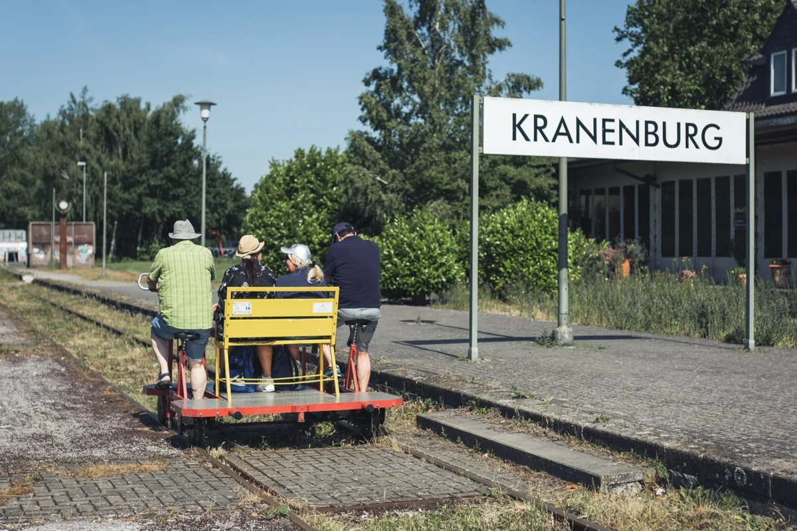
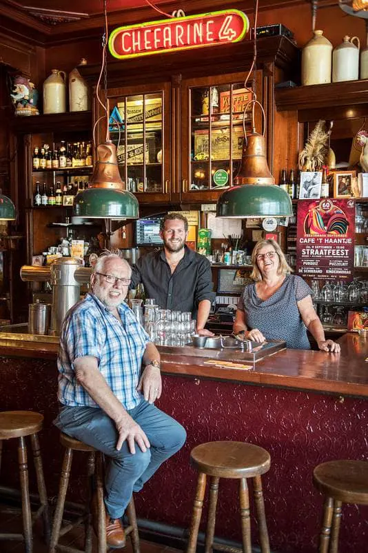

27 oktober 2026
De stadsgids van Nijmegen
Evenementen, nieuws, uitgaan en lokale bedrijven in de oudste stad van Nederland.
 De Stevenskerk tot 159128 okt, 20.00 uurHuis van de Nijmeegse Geschiedenis
30okt
De Stevenskerk tot 159128 okt, 20.00 uurHuis van de Nijmeegse Geschiedenis
30okt Tent van Troost30 okt – 2 novGrote Markt en Stevenskerk
31okt
Tent van Troost30 okt – 2 novGrote Markt en Stevenskerk
31okt Halloween bij Pop Culture Arcade31 okt, 12.00 uurPop Culture Arcade
31okt
Halloween bij Pop Culture Arcade31 okt, 12.00 uurPop Culture Arcade
31okt Nijmegen Klinkt31 okt, 15.30 uurStevenskerk
31okt
Nijmegen Klinkt31 okt, 15.30 uurStevenskerk
31okt Halloween festival31 okt – 1 novKloster Graefenthal
1nov
Halloween festival31 okt – 1 novKloster Graefenthal
1nov Even stil staan bij de dood1 nov, 12.00 uurStevenskerk
Even stil staan bij de dood1 nov, 12.00 uurStevenskerk

De beste adressen per keuken en per gelegenheid, van lunch tot diner.

Trouwlocaties, fotograaf, jurk, ringen, muziek en een handige checklist.

Hotels, Airbnb's, vakantieparken en campings.

Bed and breakfasts in Nijmegen, Groesbeek en Wijchen.

Afstanden, voorbereiding, blessures voorkomen en overnachten.

Een kamer vinden en wegwijs worden in de stad.

Locaties voor feesten, vergaderingen en teamuitjes.

Historische kroegen, biercafés, eetcafés en uitgaan.

Bahnhofstraße 15, 47559 Kranenburg

Mehrer Straße 1, 47559 Kranenburg

Daalseweg 19, 6521 GE Nijmegen
Weurtseweg 462, 6541 BE Nijmegen

Cipresstraat 154, 6523 HR Nijmegen

Wylerbaan 4G, 6561 KR Groesbeek

Grote Markt 21, 6511 KA Nijmegen

Jansbuitensingel 5, 6811 AA Arnhem